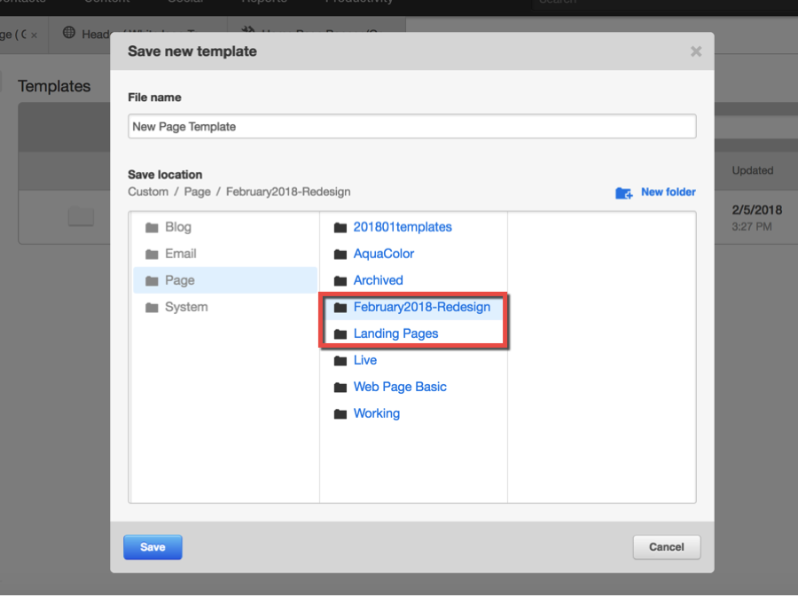
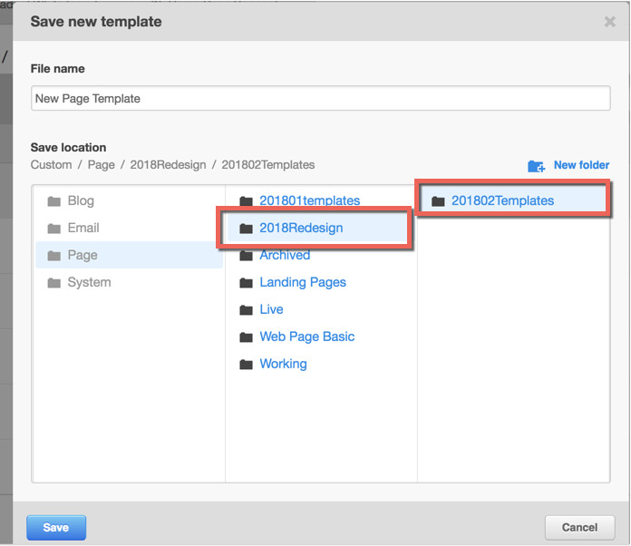
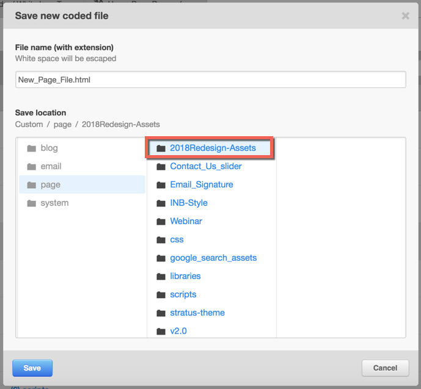

Organizing Design Manager and File Manager
Problem/Situation
At the moment our templates, modules, code files and other static assets are arranged in an unstructured way. There is apparently no organization in place! Every time a new page design request is received, a template is being started from scratch (although leveraging the existing modules and code where possible). At the end of day we have a hard time figuring out what template is being used and which one is not used any more.
The idea is to classify all templates, code files and static assets in an intuitive way.
Key Guidelines
- Avoid special characters where possible.
- Keep the names and labels concise. They shouldn’t be more than 25 characters.
- A record retention strategy needs to be in place, we will talk about it in a bit.
- Use relevant date information in names and labels where possible, e.g. a folder that contains all the template built in January 2017 should have following name i.e. 201701Templates. Using reverse order date will arrange the list in chronological order (See Figure 1, Figure2).
- Use short forms and abbreviations where possible for example a thank you page template can be called Template_TY.
- The time unit for classifying stuff is a month e.g March 2018.
Naming Folders
Templates and Coded files All the templates, code files or static assets should be organized in a folder, which has a name that contains the date information in reverse order. Refer to point 4 in Key Guidelines section. See Figure 1, Figure 2.
File Manager
Based on our working experience, it best to organize files based on the page or resource to which it belongs. For example all images for the home page should be organized in following manner: Home > Image > 201712 (For all images used in home page in 201712). See Figure 3.

Figure 1

Figure 2

Figure 3
Naming Templates
Naming a template is pretty straightforward. Prepend the page name with the year and month, for example 201801 and a “Template” and append it with a “_Live” in case the template is used for a live page. This will ensure that all live templates can be searched using the Live flag. Some examples: 1. A template for a live blog will be called 201812_Template_Blog_Live. 2. A template for a development request demo page will be called 20181112_Template_RequestDemo.
Whenever a new template is live make sure you remove "_Live" from any previous live template. At a given time only one template can have "_Live" flag in its name.
If a template has been revised more than once in a month, put day as well in the first part of the template name e.g. 20171230_Template_FAQs, 20171219_Template_FAQs.
Naming Coded Files
All coded files should have a lower case name. For example CSS and Javascript files specific to the Blog can be called blog.css and blog.js respectively. The idea is to use lower case name for all files, which the end user should not play around with, such as the coded files.
Naming Modules
Modules cannot be classified into templates. There are two types of modules though i.e Custom and Global.
Custom Modules
The naming convention for a custom module should be intuitive and should reflect the feature it is developed for and the reverse timestamp. For example if a module is build for a carousel in Feb 2018, it should be called 201802_Custom_Carousel. Using reverse timestamp will put it in a chronological order.
Global Modules
The naming convention for global modules will remain similar to custom modules. Just replace Custom with Global e.g. a global module for header would be called 201802_Global_Header.
Naming Module Fields
A module field should be named in following order: Purpose Type e.g. if a text field is used for displaying headline in a hero area module, it should be called Headline Text. Let HubSpot engine take care of internal naming.
Naming Pages
Naming pages is pretty straightforward e.g. FAQs, Terms and Conditions. Make sure any previous version of the page is archived when a new page goes live.
The internal name and title of the page should be identical.